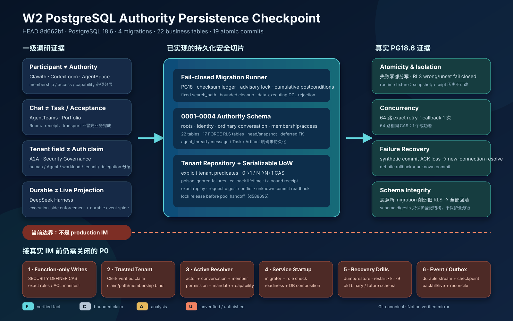

历史检查点：本文冻结在
8d662bf、0001–0004和本批 19 个小提交，不回写后续实现事实。0005function-only writes、exact access validator 与 PostgreSQL 18.6 新证据见34_postgres_function_only_writes_and_exact_access_checkpoint.md。
日期：2026-08-28（Asia/Shanghai）
分支：
dev_wanwork_quantum_entanglement代码基线：
8d662bf4faec1cfaa12b63f4dfc2132ae6869dbb本批提交范围：
8814e8d^..8d662bf（19 个小提交）一级研究根：
/Users/lwblx/huapohen/agent/automation/2026/05_08/1/2output与/Users/lwblx/huapohen/agent/automation/2026/05_08/1/2output/more代码范围：
apps/im-api/internal/platform/postgres/migrations、apps/im-api/internal/platform/postgres/imstore、apps/im-api/internal/imstore

本阶段把上一检查点中的 IM 身份、普通会话、provider mapping、membership 和 access 纯值合同，向 PostgreSQL 权威持久化推进了一层。当前已经具备：
0001～0004 四个 migration，共 22 张
wanwork_im 业务表；这不是 W2 完成，更不是“原生 IM 已经可生产接入”。当前成立的是一个经过真实 PostgreSQL 验证的 authority persistence substrate。仍未成立的关键路径包括：受控数据库写函数与精确角色/ACL manifest、Clerk verified claim 到 trusted tenant context、action-time authority resolver、服务启动时 migration/DB composition、PostgreSQL event store/outbox、message/agent thread、融云 adapter 和完整 Task/Artifact/Acceptance 闭环。
| 标记 | 当前结论 |
|---|---|
[F] |
4 个 migration 在本地 PostgreSQL 18.6 被实际应用；22 张业务表被创建；17 张 tenant-scoped 表启用并强制 RLS。 |
[F] |
migration catalog checksum、ledger 连续性、旧版本累计
postcondition、固定 search_path 和 token-aware DDL
allowlist 均有代码与测试。 |
[F] |
repository 的每条读写 SQL 都显式携带 tenant predicate，create 只允许
0→1，update 只允许 N→N+1。 |
[F] |
64 路相同幂等请求只执行一次 callback；64 路相同 CAS 只有一个成功者；已在真实 PostgreSQL 测试中验证。 |
[F] |
synthetic commit ACK loss 会隔离原连接并用新连接回读
receipt；能读到时收敛为 ResolvedAfterUnknown=true。 |
[C] |
所有保证只限定在当前登记的 PostgreSQL schema、四类 conversation authority repository、同一数据库 transaction 和测试过的 runtime-role fixture。 |
[A] |
当前分层为后续 IM authority resolver 和 durable event spine 提供了正确底座，但不能替代它们。 |
[U] |
dump/restore、kill-9、旧 binary 对 future schema、角色恢复、真实多实例部署和生产连接故障尚未形成完整证据。 |
snapshot 就宣称拥有 DB credential
的任意代码无法改写历史；agent_thread、message、Task、Artifact、Acceptance 或生产
event store 已持久化。本阶段继续使用固定证据链：
一级调研 [F]/[C]/[A]/[U]
-> 产品不变量
-> 数据库对象与 transaction seam
-> 运行时 enforcement
-> 失败矩阵
-> 可复核证据其中 [F]
是固定源码、规范或可复现实验事实，[C]
是厂商/维护者主张，[A] 是分析判断， [U]
是未知。[C]/[A] 不得被改写成已经交付的产品能力。
| 一级证据 | 证据口径 | 设计决策 | 当前已落实 | 仍未落实 |
|---|---|---|---|---|
clawith/research_report.md:148-152,196-226,493-503,543-557,599-611 |
[F]/[A] 人与 Agent 可统一为 Participant，但
tenant/member/Agent 状态必须在发送点独立重验；IM provider 是
projection。 |
Actor、tenant membership、conversation membership、access、provider mapping 分表，不互相授予权限。 | identity/conversation/membership/access/provider-binding schema 与 repository seam。 | active resolver、installation/mandate/budget 和发送点重验。 |
_portfolio/master_research_report.md:220-226,648-671 与
agentteams/research_report.md:250-282 |
[A] Room/chat 不等于 Task、Artifact 或 Acceptance
authority。 |
本批只持久化普通会话及其 authority seam，不把 command receipt 或会话状态冒充业务完成。 | ordinary direct/group、membership/access 和 digest receipt。 | Task/Attempt/Action/Artifact/Acceptance/event spine。 |
codexloom/research_report.md:216-234、agentspace/research_report.md:739-759 |
[A] membership/role
声明不自动开放工具、知识或外部执行；adapter 能启动不证明语义完整。 |
access projection 与 capability/mandate/adapter acceptance 分离。 | 六个 immutable access projection 字段；provider binding 只做映射。 | action-time policy、capability assignment、provider sandbox/readback。 |
deepseek-harness/research_report.md:255-312,543-591,823-842 |
[F]/[A] durable/live 分域，可靠恢复依赖 durable event
spine 和 execution-side enforcement。 |
本批不把进程内 event fake、数据库 receipt 或 UI visibility 当成 durable event system。 | transaction seam 和未来 event store 的 PostgreSQL 基础。 | event stream/event/outbox/checkpoint、backfill+live 和 crash replay。 |
protocol-a2a/research_report.md:425-457,480 |
[A] payload 中出现 tenant
字段不等于认证或隔离，extension 可被伪造。 |
repository 显式 tenant predicate；GUC 只作纵深防线。 | typed tenant + SQL predicate + FORCE RLS。 | Clerk verified claim、claim/path mismatch admission、trusted tenant derivation。 |
tech-agent-security-governance/research_report.md:187-231,315,442-444 |
[A] human、Agent、workload、tenant、delegation、secret
必须分层。 |
identity schema 不把
agt_、sys_、svc_ 前缀当作可执行
authority。 |
human principal、Actor、tenant membership、provider actor binding 分层。 | workload/delegation/installation/secret lease/action executor。 |
exactly-once
当作宣传词。当前只证明同一服务数据库命令在特定 transaction/receipt
合同下的 exact replay；外部 effect 仍必须按 at-least-once + idempotency
+ unknown/reconcile 设计；| 版本 | 名称 | 主要对象 | 当前边界 |
|---|---|---|---|
0001 |
authority_roots |
provider_realms、tenants、workspaces |
只建立 provider realm 与 tenant/workspace 根；不包含 credential、endpoint 或 provider capability。 |
0002 |
identity_authority |
human principal、Clerk binding、Actor、tenant membership、provider actor binding 的 head/snapshot | 分离全局 human principal 与 tenant Actor；prefix/type 仍不授予执行权限。 |
0003 |
conversation |
conversation 与 RongCloud conversation binding 的 head/snapshot | 只支持 ordinary direct/group；故意拒绝
agent_thread。 |
0004 |
conversation_authority |
membership/access
head/snapshot、tenant_command_receipts |
membership、access、receipt 互相独立；receipt 不是 provider receipt。 |
业务 schema 一共 22 张表：
wanwork_im
├── roots (3)
│ ├── provider_realms
│ ├── tenants
│ └── workspaces
├── identity authority (10)
│ ├── human_principal_{heads,snapshots}
│ ├── human_identity_binding_{heads,snapshots}
│ ├── actor_{heads,snapshots}
│ ├── tenant_membership_{heads,snapshots}
│ └── provider_actor_binding_{heads,snapshots}
├── conversation (4)
│ ├── conversation_{heads,snapshots}
│ └── provider_conversation_binding_{heads,snapshots}
└── conversation authority (5)
├── conversation_membership_{heads,snapshots}
├── conversation_access_{heads,snapshots}
└── tenant_command_receipts另有 wanwork_meta.schema_migrations 作为 migration
ledger。它不属于业务 authority schema。
17 张 tenant-scoped 表启用 ENABLE ROW LEVEL SECURITY 与
FORCE ROW LEVEL SECURITY，每张表都使用 exact tenant
policy：
USING (tenant_id = current_setting('wanwork.tenant_id', true))
WITH CHECK (tenant_id = current_setting('wanwork.tenant_id', true))这能证明：当连接以受 RLS 约束的角色运行且 GUC unset/wrong 时，tenant row 不可见或不可写。
它不能证明：调用者有权选择某个 tenant。当前 UoW 接受已经类型化的
TenantID 并设置 GUC；把 Clerk verified claim、HTTP path
和平台 membership 收敛为 trusted tenant context 仍是独立的 P0
admission。
head 持有 current revision，snapshot 持有版本内容；head 通过
DEFERRABLE INITIALLY DEFERRED 的 current-snapshot FK
指向同一 aggregate 的当前版本。repository 采用同一 transaction 内：
create: INSERT head revision=1
INSERT snapshot revision=1
update: UPDATE head
WHERE current_revision = expected
SET current_revision = expected + 1
INSERT snapshot revision = expected + 1repository 强制 create 0→1、update
N→N+1，并把 CAS miss 映射为稳定
ErrRevisionConflict。但 runtime role 当前仍需要直接
INSERT snapshot 和 UPDATE head，因此拥有该
credential 的其他代码可以绕过 repository。这正是下一批 0005
受控写函数和角色 ACL 必须关闭的 边界。
(provider, realm, subject) 为键；usr_ | agt_ | sys_ | svc_
与 subject type 精确匹配；usr_
Actor；direct | group，明确拒绝
agent_thread；workspace_id 允许 NULL，与 Go 值合同中 nil workspace
一致；(provider, realm, provider_conversation_id) 跨
tenant 唯一，防止同一真实群被两个 tenant 同时宣称；usr_ 和
agt_，拒绝 sys_ 与 svc_；owner | manager | member，status 为
active | removed；can_read、can_send_message、
can_manage_members、can_manage_conversation、can_invoke_agent、
can_publish_artifact_reference；can_invoke_agent 和
can_publish_artifact_reference 当前只是冻结词汇，不是生产
action gate。数据库 FK 只保证 access 对应一个 membership head，不保证 current
membership snapshot 是 active。 因此移除成员的 use case 必须在同一 UoW
内同时追加 membership=removed 与 all-false access
revision； 授权读取仍必须组合 current membership active 与目标
permission bit，不能只查 access row。
真正执行 invoke_agent 还必须组合
conversation/actor/membership active、Agent release/installation、
mandate、capability、budget、data route、taint 和 action-time
policy；真正发布 Artifact ref 还必须组合 Artifact immutable
digest、scan、Acceptance 和显式 publish authorization。
server_version_num >= 180000 && < 190000，其他
major fail closed；每个新 migration 在写 ledger 前，不仅检查自己的
postcondition，而是累计检查 1..currentVersion。 真实
PostgreSQL 测试注入了一个“新 migration 自己合法，但禁用旧
actor_heads RLS”的恶意版本； 预期结果是整个 migration
transaction 回滚、旧 schema 保持、ledger 不增长。
该门禁避免未来 0005 通过“自己满足新 digest”来静默削弱
0001～0004。
每个 ledger bootstrap/migration transaction 设置：
SET LOCAL search_path = pg_catalog;真实测试使用 hostile ambient search path，确认 migration 仍命中显式
schema 与 pg_catalog。
SQL policy 会跳过 line/block comment、single/double quote 和 dollar quote，然后按 statement head allowlist。当前只允许：
ALTER TABLE；CREATE TABLE|SCHEMA|INDEX|UNIQUE INDEX|POLICY；DROP TABLE|SCHEMA|INDEX|POLICY。transaction
control、SET/RESET、set_config、DO、function、GRANT、view
以及未闭合 comment/quote/dollar quote 默认拒绝。8d662bf
进一步扫描每条语句的全部非 literal token，拒绝
CREATE TABLE AS SELECT、危险
DEFAULT、set_config、pg_sleep、file/backend-control
等已知 data-executing form；ALTER TABLE ... DEFAULT
当前全部拒绝，CREATE TABLE DEFAULT 只允许 literal 或
clock_timestamp()。
该 lexer 仍不是通用 SQL parser，也不是不可信 SQL
沙箱；嵌套表达式的完整语义不能仅靠 token policy 证明。它的目标是把
source-controlled migration 语言压缩为当前所需的可审计 DDL 子集，并由
transaction rollback 与累计 postcondition 兜底。未来要引入受控 function
时，不能直接放开所有
CREATE FUNCTION，必须对函数定义、owner、security、search_path、ACL
和 body 建立专门 manifest。
当前冻结三个 table-schema digest：
identity authority:
9a178617cbb463df31450f4302454ae4eba101dd2d2f8b2567dad7f49088c5d5
conversation:
17002b4c0b7a757e23a96418634af02c517aa85a4bae415175ab33e75cff8457
conversation authority:
b500175ab19a74fdd1f4cf810906318f9d76e1f1113cad59ec9cd0aa1dde6d34digest 覆盖受清单管理表的 relation、column、constraint、index、policy 与一部分 ACL/trigger/rewrite/ publication 负向形状。它不覆盖业务行，也尚未冻结所有 named role/table/schema/function ACL。这一限制 必须保留在所有对外文档中。
internal/imstore 冻结：
SHA256Digest：只接受 64 字节 lowercase canonical
hex；CommandIdentity：kind + idempotency key + request digest；CommitReceipt：result digest、commit
time、fresh/replay/unknown-resolution 状态；ConversationRepository；ConversationAuthorityRepository；TenantRepositories；TenantUnitOfWork.Read/Execute/Resolve；port 不暴露 pgx.Tx，避免 use case 自由执行 SQL 或控制
transaction。
repository instance 在构造时绑定一个 typed tenant。每条 SQL 同时满足：
WHERE/INSERT 显式包含 tenant；ErrTransactionClosed。这防止把连接池残留 GUC 或调用方传错 reference 当作唯一隔离边界。
repository 会记录第一次 CAS、完整性、read corruption 等错误。即使 callback 故意忽略错误并返回 成功 digest，UoW 在 commit 前仍读取 poison 状态并回滚；不会写出“业务状态没成功但 receipt 成功”的 假象。
ErrNotFound 等真实 read 失败也不能被 callback
吞掉后继续提交另一半状态。
| 对象 | Repository 能力 | 当前拒绝 |
|---|---|---|
| Conversation | current read、create/update CAS | agent_thread、跨 tenant、revision skip/rewind、type
drift |
| Provider conversation binding | current read、create/update CAS | 非 RongCloud、非 group、跨 tenant、active subject conflict |
| Conversation membership | current read、create/update CAS | system/service participant、跨 tenant、无 conversation/Actor |
| Conversation access | current read、create/update CAS | 无 membership、跨 tenant、revision drift |
identity schema 当前已有 migration/test，但尚未暴露对应 production repository；它不能被列为已完成的 服务读写能力。
typed TenantID + CommandIdentity
-> acquire dedicated pool connection
-> session advisory lock(tenant, kind, idempotency key)
-> BEGIN SERIALIZABLE
-> SET LOCAL search_path + tenant GUC
-> read existing receipt
├── same request digest -> exact replay, callback 不执行
└── different request digest -> ErrIdempotencyConflict
-> execute callback with tx-bound repositories
-> reject callback error or repository poison
-> INSERT final receipt once
-> COMMIT
├── definite rollback -> unavailable, no receipt
└── unknown outcome -> quarantine original connection + new connection Resolveadvisory lock 在 BEGIN SERIALIZABLE
前获取，避免等待者拿着 stale snapshot 进入 transaction。lock key 对
tenant、command kind、idempotency key 做 domain-separated SHA-256 后取
64-bit。
tenant_command_receipts 的主键是
(tenant_id, command_kind, idempotency_key)，内容保存
request_sha256、result_sha256 和
committed_at。
它证明的是：在当前数据库内，同一 tenant command identity 对应的 mutation transaction 与最终 digest 一起提交；exact retry 可以返回同一个 digest，不再次执行 callback。
它不保存 response body、event sequence、Artifact bytes 或 provider receipt，因此：
result_sha256 也不能自行重建 typed result。command kind
与 request/result digest 的 canonicalization 必须版本化；unknown/replay
后，上层还需按 typed aggregate reference 回读 current state 并做
revision/ integrity 校验，不能仅凭 digest 宣称业务结果已经恢复。
若 commit 返回一个不能证明 definite rollback 的错误，UoW：
ErrCommitOutcomeUnknown，不盲重试
mutation。synthetic ACK-loss 测试在真正 commit 后人为返回错误，验证新连接回读能收敛为成功。
现有 W1 EventStore 是 volatile contract fake，没有
tx-bound PostgreSQL implementation。若当前在 repository commit 后再
append event，会产生业务状态已提交但 event 丢失的 crash gap；若先 append
fake 再 commit DB，则会产生 event 存在但业务状态回滚的反向 gap。
因此本批明确不做伪双写。下一步必须以同一 PostgreSQL transaction 内的 event store/outbox 或经过证明的 transactional handoff 关闭这个缺口。
临时实例：PostgreSQL 18.6，loopback 端口
55488。实例与 data root 只用于本机测试，不进入 Git。
WANWORK_TEST_POSTGRES_ADMIN_URL='postgresql://<local-user>@127.0.0.1:55488/postgres?sslmode=disable' \
go test -count=1 ./internal/platform/postgres/migrations
WANWORK_TEST_POSTGRES_ADMIN_URL='postgresql://<local-user>@127.0.0.1:55488/postgres?sslmode=disable' \
go test -race -count=1 ./internal/platform/postgres/migrations
WANWORK_TEST_POSTGRES_ADMIN_URL='postgresql://<local-user>@127.0.0.1:55488/postgres?sslmode=disable' \
go test -count=1 ./internal/platform/postgres/imstore
WANWORK_TEST_POSTGRES_ADMIN_URL='postgresql://<local-user>@127.0.0.1:55488/postgres?sslmode=disable' \
go test -race -count=1 ./internal/platform/postgres/imstore
go vet ./internal/platform/postgres/migrations
go vet ./internal/platform/postgres/imstore以上均通过。报告不记录任何 API Key 或外部服务 credential。
NOSUPERUSER NOBYPASSRLS NOINHERIT runtime role
下，snapshot/receipt 的 UPDATE/DELETE/TRUNCATE 均返回
SQLSTATE 42501。最后一条只证明这些操作在当前 grant 下被拒绝。runtime 仍直接拥有完成 repository CAS 所需的 head 写和 snapshot insert 权限；尚不能说 credential 被限制到固定 command function。
| Commit | 内容 |
|---|---|
8814e8d |
checksummed authority-root migration |
9f72aa5 |
fail-closed PostgreSQL migration runner |
eac2cbb |
migration postcondition verification |
457a0e1 |
identity authority migration |
d3915ca |
identity authority PostgreSQL boundary tests |
54f2ea0 |
ordinary conversation migration |
1b9047b |
conversation routing/type/binding boundary hardening |
371664e |
conversation isolation PostgreSQL tests |
c84f363 |
conversation participant restriction |
8a6e509 |
conversation authority migration |
9c4a374 |
conversation authority PostgreSQL tests |
24561cc |
typed tenant IM store contracts |
bd60371 |
cumulative migration invariant verification |
4afe28d |
token-aware atomic migration DDL allowlist |
69a3597 |
tenant-bound PostgreSQL repositories |
bf4c5d1 |
poison ignored repository read failures |
09511ef |
idempotent PostgreSQL tenant Unit of Work |
d588695 |
receipt conflict 路径先释放 advisory lock，再交还 pool connection 并 resolve |
8d662bf |
拒绝 data-executing migration DDL form 与危险 default expression |
该范围共修改 29 个文件，新增 7,626 行、删除 1 行。每个阶段性改动独立提交，并已推送到远端同名 分支；本报告产生后的文档提交另行记录。
必须先完成，不能只靠 Go repository 约定：
SECURITY DEFINER revision write functions；EXECUTE 与必要 SELECT，不获
head UPDATE、snapshot INSERT、schema
CREATE；prosecdef、proconfig/search_path、volatility、PUBLIC/named
ACL；rolsuper/rolbypassrls/rolinherit/rolcanlogin、owner
membership 和 exact grants；Clerk JWKS verified claim、HTTP path tenant、external human binding 和 active tenant membership 必须在进入 UoW 前收敛；claim/path mismatch、revoked binding、suspended principal、removed membership 一律拒绝。 tenant GUC 不接受客户端自报。
最小 ordinary IM action gate：
authenticated human/workload
+ tenant active
+ Actor active
+ Conversation active
+ ConversationMembership active
+ explicit ConversationAccess bit
+ current revision / no held-draft driftAgent invoke/publish 还必须叠加 installation、release、mandate、capability、budget、Artifact acceptance 和 data-route/taint policy。resolver 必须在 action time 执行，不能只在页面隐藏按钮。
当前 production cmd/im-api/main.go 尚未把 migration
runner、pool、UoW、readiness gate 和 shutdown 组合起来。DB-backed route
不得在 migration/postcondition/role manifest 未通过时 ready。
必须实现 expected-revision stream append、global position、projection checkpoint、transactional outbox、 backfill+live、unknown event preservation 和 crash/reopen/restore 测试。command receipt 不能代替这一层。
agent_thread、message/reaction/read state、RongCloud
adapter、Task/Attempt、Artifact/Acceptance 在上述 P0 seam
稳定后增量接入。这样避免将真实 IM 流量压到仍可被 DB credential 绕过的
authority 基础上。
| 维度 | 状态 | 说明 |
|---|---|---|
| Migration catalog/runner | 已完成当前版本 | PostgreSQL 18.x、checksum、lock、累计 postcondition、DDL allowlist；未来 function/role manifest 仍需扩展。 |
| Authority schema 0001-0004 | 已完成当前版本 | roots、identity、ordinary conversation、membership/access/receipt；不含 message/thread/Task。 |
| Repository/UoW | 已完成当前版本 | conversation authority transaction、CAS、idempotency、unknown readback；identity repository 未完成。 |
| Database credential containment | 未完成 P0 | runtime 仍能直接执行 repository 所需 table writes。 |
| Authenticated tenant admission | 未完成 P0 | 尚未接 Clerk verified claim。 |
| Action-time authorization | 未完成 P0 | access 还是 projection vocabulary。 |
| Durable event/outbox | 未完成 P0 | W1 memory fake 和 command receipt 均不能代替。 |
| Provider truth | 未开始 | 未连接融云 sandbox 或 production outbound。 |
| Production readiness | 未达到 | 当前是可复核工程检查点，不是商用发布。 |
最终结论：8d662bf 是一个值得保留和远端备份的 W2
PostgreSQL authority persistence 检查点；它已
把大量“靠调用约定”的风险压进 schema、repository 和 transaction，但数据库
credential containment、 authenticated tenant admission、action-time
resolver、service startup 与 durable event/outbox 仍是接入 真实 IM
前的硬门槛。
apps/im-api/internal/platform/postgres/migrations/catalog.goapps/im-api/internal/platform/postgres/migrations/runner.goapps/im-api/internal/platform/postgres/migrations/sql_policy.goapps/im-api/internal/platform/postgres/migrations/postconditions.go、
schema_digest.goapps/im-api/internal/platform/postgres/migrations/sql/0001_*.sql～0004_*.sqlapps/im-api/internal/imstore/contract.goapps/im-api/internal/platform/postgres/imstore/repositories.goapps/im-api/internal/platform/postgres/imstore/uow.go*_integration_test.go 与
imstore/uow_integration_test.go本报告是 Git canonical evidence。Notion 只在本批 Git 文档提交、推送并远端回读后同步；同步完成必须 再次 fetch/readback，不能仅以工具返回成功冒充内容一致。